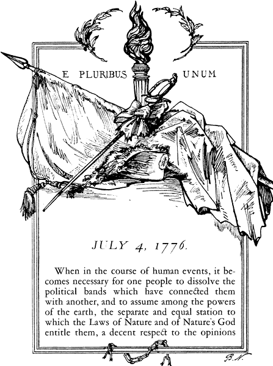
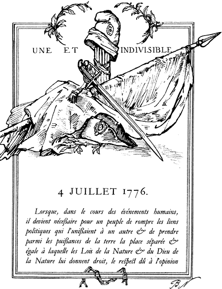

This is a static copy of the final website maintained by the Roy Rosenzweig Center for History and New Media.
Elise Marienstras and Naomi Wulf
The French and the American revolutions are said to be landmarks in the history of mankind, and each claimed to be exceptional, while each entertained a unique relationship with the other, partly because of the short time that separated them. Indeed, although French culture stands alone in history, it is not without direct or indirect affiliation with the history of the United States. The American Declaration of Independence was valued by French readers of its time, and not only because French liberals enrolled in the defense of the British American colonies; in its French wording, the declaration became one of the philosophical and political references of the French who envisioned a utopian future. Very early in the French revolutionary development, however, the American Declaration of Independence and other founding documents revealed themselves to be less and less relevant to French political culture. Strangely enough, as the American Revolution was rediscovered, so to speak, in the late twentieth century as the only valid model for revolutionary ideals, the declaration was no longer translated; earlier translations proved sufficient for modern readers, and commentators focused primarily on the more general and universal meaning the document conveyed. After two centuries of translations and commentaries, it seems that the language of the Declaration of Independence has grown apart from French political culture, as a 1918 document, whose frontispieces are here reproduced, illustrates.1 These two symmetrical pages of a document symbolizing the French-American alliance and friendship epitomize the misunderstandings arising from any attempt to transpose the spirit of the declaration from one culture to another. Even though the translation beneath the icons comes out clear and faithful to the original text, the symbols that surmount them are not equivalent. For instance, to what extent is the motto E pluribus unum an accurate transposition of the French Une et indivisible? The latter qualifies the French republic, but it is far from occupying the symbolic place that the American motto takes on the Great Seal of the United States. And is the Phrygian cap, which symbolizes the popular revolution in France in 1789, a parallel to the American torch of liberty? These symbols, engraved with the intention of demonstrating that the two republics were really sisters in history as well as in ideas, expose the misunderstandings born out of the difficulty of translating concepts from one culture to another, from the history of one nation to that of another.  In this 1918 French publication, the American Declaration of Independence  Frontispiece for the French translation of the American Declaration In studying translations of the Declaration of Independence into French, we will dwell longer on the eighteenth-century publications than on those that followed; at the time of the two great revolutions, French debates on the American founding documents were lively bearers of political action. In the nineteenth and twentieth centuries, attention to the Declaration of Independence and other American documents dwindled, to be revived again according to the political and ideological needs of French history. The Eighteenth-Century Migration of the Declaration of Independence As early as August 1776, the American founding document traveled across the Atlantic Ocean to be translated and published for French readers, thirteen years before France experienced its own revolution. Most of the French translations of the Declaration of Independence and of the state constitutions appeared during this period of great enthusiasm for the American cause. French interest in America shifted from an anthropological reading of America as "early mankind" or as "eutopia" to a revolutionary vision of a "free people"; further, there was much French national interest in the British-American struggle. "America had hardly declared its independence," as the marquis de Condorcet later remarked, "when [French] political leaders clearly understood that this happy revolution would necessarily result in the ruin of England and the prosperity of France." 2 Indeed, by the time French revolutionary leaders at the National Assembly (Assemblée Nationale, 1789 - 1791) were discussing and drafting their own Declaration of the Rights of Man and the Citizen (Déclaration des Droits de l'Homme et du Citoyen) and a constitution, they referred less to the Declaration of Independence than to the American state constitutions and bills of rights (especially the Virginia Bill of Rights and the constitution of Pennsylvania), the Articles of Confedera-tion, and, to a lesser extent, the federal Constitution. Between 1777 and 1786, the state constitutions and bills of rights were published in France at least five times. We can, however, infer from allusions made at the National Assembly that the declaration, although often confused with the Virginia Bill of Rights, was constantly on the minds of the delegates. In the course of their debates, which lasted from 1789 to 1791, reference to the American documents was frequent; it acted as an indispensable guide or foil in the conception of their own principles. Along with the liberal British tradition, the American model served the French delegates as a tool for elaborating their own declaration of rights and defending various governmental principles and options such as unicameralism versus bicameralism, the right of veto, and federalism. Our study will thus focus mainly on pre - French Revolution translations of the Declaration of Independence. Further clarification of the reception of American political concepts will be attained through the reading of the debates that started in the National Assembly during the summer of 1789 and that often referred to the American precedent. 3 We will not dwell upon the continuous trend that accords to France, chronology notwithstanding, the virtue of having the preeminent revolution; nor shall we look closely at the weight of the American filiation, at the tradition of America as a "model," at the "borrowings" from and "influences" of one revolution on the other. 4In reading through these debates and translations, we will focus on the travel of concepts and ideas and the way the American political philosophy and undertaking were understood by a French audience. The First Translations Until the Franco-American alliance treaty of 1778, which gave royal legitimacy to French enthusiasm for the new American republic, the first French translations of American documents were published anonymously outside the borders of France. To this day, the authorship of most translations printed before 1783 remains uncertain. Most frequently they have been attributed to a friend of Benjamin Franklin's, Louis-Alexandre, duc de La Rochefoucauld d'Enville, a descendant of the famous philosopher Alexandre de la Rochefoucauld. 5 We have studied nine of these translations, including one that several twentieth-century French authors attribute to "Thomas Jefferson himself." 6The earliest known translation was published in the Netherlands in one of the three French journals interested in American affairs, Nouvelles politiques publiées à Leyde, ou Nouvelles extraordinaires de divers endroits, commonly known as the Gazette de Leyde . The next two translations were published in the Affaires de l'Angleterre et de l'Amérique, a semiclandestine periodical, advertised as printed in Antwerp but actually published in Paris and secretly subsidized by the comte de Vergennes, the French minister of foreign affairs with whom Benjamin Franklin had been in contact. This periodical, overtly hostile to Great Britain, offered news about American and English events from 1776 onward. Each number contained a letter signed by a "Banquier de Londres" (London banker), since identified as the above-mentioned duc de La Rochefoucauld d'Enville. In 1777, the Affaires published two different translations of the declaration and some of the state constitutions, translated by La Rochefoucauld, translations that had been completed with the allegedly "eager assistance of Benjamin Franklin." 7 Subsequent translations did not need to be anonymous and clandestine, and they were openly sold in Paris. They were not included in periodicals but could now be found as parts of separate volumes. The authorship of the translations of the state constitutions, which were included in a book published in 1778 under the title of Recueil des loix constitutives des colonies angloises, still remains problematic. It is attributed by Gilbert Chinard to a "mysterious and enterprising Régnier" whose signature appears after a dedication to Benjamin Franklin. This collection is also often attributed to La Rochefoucauld. Yet another publication, the Essais historiques sur la révolution de l'Amérique, two volumes published in Brussels in 1782 and authored by Michel René Hilliard d'Auberteuil (one of Thomas Jefferson's friends), contains translations of the state constitutions and the Declaration of Independence. 8 In 1783, La Rochefoucauld finally published under his own name a translation of the American founding documents with the title Constitutions des treize Etats-Unis de l'Amérique . This book, which had been revised by Franklin, provided for the first time the complete translations of all state constitutions as well as a translation of the declaration, and it seems to have been the main source for the members of the National Assembly. La Rochefoucauld's translations were then included in a series of articles about the United States of America as part of the Encyclopédie méthodique, published in 1784 - 1786 by Jean-Nicolas Démeunier, a private secretary of the king's brother, "Monsieur." These articles were republished in an expanded version in 1786 as an independent essay, Essai sur les Etats-Unis d'Amérique, and again, under the title L'Amérique indépendante ou les différentes constitutions des treize provinces, in 1790 when Démeunier worked as a member of the National Assembly. The articles by Démeunier (but probably not the translations) were revised by Jefferson at Démeunier's request. 9 The last translation to be here considered is found in the works on America by Filippo Mazzei, an Italian-born agent for Virginia in Europe and a close friend of Jefferson's. His Recherches historiques et politiques sur les Etats-Unis (which also included the marquis de Condorcet's famous Lettres d'un bourgeois de New Haven ) was published in Paris in 1788 as a deliberate response to what he perceived as anti-American theses in writings such as those of the abbé de Mably, about whom Mazzei wrote that his "principles of government are opposed to true republican principles." 10 One is struck by the fact that in the course of thirteen years the translation of the declaration was so frequently revised and rewrought. From one publication to the other, the translations of the constitutions were generally copied without any modification from La Rochefoucauld's translations originally appearing in the Affaires de l'Angleterre et de l'Amérique, but there are significant changes in the successive translations of the Declaration of Independence itself. 11 Divergence or Misunderstandings? The Traveling of Ideas The first striking difference between the original and the translations is to be found in the title, which appears in the French publications as having been translated, not from the engrossed and signed "Unanimous Declaration," but from the last version after it was revised by the Continental Congress; that version was sold as a broadside by the Philadelphia printer John Dunlap in July 1776 before the declaration was "unanimously" signed by the thirteen states. The translated title, though, resembles that of Jefferson's "rough draft," since, as in that draft, the preposition "of" in "A Declaration of the Representatives" was reproduced in five different translations by the French des in the title "Déclaration des Représentants." Other translators seem to have used the draft revised by John Adams, which read "A Declaration by the representatives," or else the copy that was submitted to Congress with the same title by the Committee of Five. We thus find, from one translation to the other, both French grammatical forms, des and par les, while the first translator rather awkwardly rendered the English title "A Declaration by " with the French wording "Déclaration de la part des représentants" ( Gazette de Leyde ). 12 Although these variations are not important for an understanding of the title, they speak for the uncertainty of the channels by which the successive translators obtained the English version, while Franklin is supposed (without any proof ) to be the one who transmitted Jefferson's first drafts to his French friends in Paris. 13 The conjectures on these points leave open the examination of the translations themselves. The translators seemed less concerned with the authenticity of their sources than with rendering a literal, even if clumsy, translation of ideas, which were then perceived as fundamental to inspire the French public. It is obvious from the writings of the time that French learned opinion looked at the American founding texts as "usable matter," even more when the French revolutionary leaders themselves undertook to institutionalize the nouveau régime and adopt a declaration of rights that would help crystallize and perpetuate the revolutionary accomplishment. The differences in American and French sociopolitical conditions and in the revolutionary movements themselves, however, accentuated the intellectual gap existing between France and America before 1789. The degree of divergence between the original English document and its French translations may be approached through three paradigms: universalism and particularism, the conception of politics and government, and the dual understanding of rights -- whether natural or positive. Universalism and Particularism The concept of universalism is naturally at work in any translation process, as translating is a substitute in the absence of a universal language. This absence is even more strongly felt in a case involving two revolutions, each of which encompasses the dialectics of universal brotherhood and national interest. Such is Jefferson's preamble to the Declaration of Independence, which swiftly shifts from the universal history of "human events" to the peculiar situation of "one people" that has to face "the opinions of mankind" and then justifies its independence by asserting that "all men" (or "mankind") are "endowed" with "unalienable Rights." There is no better English key-word for universality than "mankind," but there are no ideas more peculiar to the British colonies than the specific grievances enumerated in the second and longest part of the declaration, and there can be no more specifically nationalistic references than those invoking the "Brittish brethren" of the colonists, their "common kindred," and "consanguinity" ties with British subjects. The French translators and the revolutionaries themselves were acutely aware of the ambivalence arising from the confrontation between universal claims and nationalist or patriotic assertions. Like Thomas Jefferson, his American contemporaries thought that "it [was] impossible not to be sensible that we [were] all acting for mankind." On the other hand, French revolutionaries, paving the way for other European revolutions and for French expansion as well as for historiographical interpretations, saw in their own actions and declarations a universal message that was the bearer of profound changes for world history. When drafting their own declaration of rights and constitution, the French National Assembly members thought that their own situation, as a "regenerated people," led them to surpass the American example in formulating universal principles. 14 It is clear from the earliest French translations of the Declaration of Independence that the French liberals were more struck by the universalist character of its preamble than by the more particular list of grievances. Although translations of the preamble vary from one another and tend sometimes to distance themselves somewhat from the original meaning, the preamble was the part of the declaration that was considered usable and was admired by the French elite. Given the often awkward style in French and the actual departure of some French phrases and words from the English version, the paragraphs naming the grievances and even the final two, which more precisely announce the formation of independent states, were clearly perceived as so particular to the specific condition of the American colonies and their British intellectual and political backgrounds that they were not literally or even approximately translatable into French. At the time when the first translations were made, however, the translators could not escape the universal meaning of the key-word "mankind," which appears three times in the document of July 4, 1776. As powerful -- and familiar -- as it seems, only three translations out of the nine under consideration rendered its first occurrence literally by the French phrase genre humain. The first known translation, that of the Gazette de Leyde, and the later Essais historiques sur la révolution de l'Amérique of Hilliard d'Auberteuil use the wording des hommes, a plural form that includes male and female genders, whereas the awkward phrases du reste des hommes (the rest of men) or de tout le reste des hommes appear in the two successive publications of the newspaper Affaires de l'Angleterre et de l'Amérique and in Hilliard d'Auberteuil's translation for "the rest of mankind." The pseudo-Jefferson translation uses humanité, whose original and most frequent usage in the eighteenth century derives from the Latin biological meaning of man as a species. 15 For the second occurrence of "mankind" ("mankind are more disposed to suffer"), most French writers, perhaps guided by the plural form of "mankind are, " chose les hommes (men), while they translated the third and last reference to "mankind" (in "the rest of mankind") by the recurring le reste des hommes. This last French wording rather weakens the meaning of what in the Founding Fathers' document is a generic and abstract word pointing to the collective body of men and women as a whole. While the singular form l'homme refers, like the first meaning of humanité, to the species, the plural form les hommes conveys in the French language a more concrete and numerable object: you can count how many "men" there are in the world, but there is no numerical understanding of such a monad as "mankind." Throughout the nine eighteenth-century translations studied, the word hommes ("men") appears to be the one preferred by the French translators. It seems that they were re-luctant to use abstract words, or, as the French Declaration of the Rights of Man and the Citizen will show, French thinkers conceived such a declaration, even though expressing universal feelings and universal rights, to be more explicitly aimed at men in civil society than at those in a state of nature, where a general human species could be apprehended as such. Besides, as the 1789 debates in the French National Assembly made clear, the American former colonists were "so young a people" that only they could still think in terms of natural men. After the marquis de Lafayette had proposed a version of a declaration of rights highly inspired by the American model, the assembly member Trophime-Gérard, comte de Lally-Tollendal, exclaimed, "Please ponder the enormous difference existing between a new [ naissant ] people re-cently born to the universe, a colonial people breaking away from a distant government, and an ancient people." 16 Many of the delegates insisted that the French antique people had to deal with historical traditions and former positive laws, which required the revolutionaries to think directly in terms of a civil society. By contrast, said the pastor Jean-Paul Rabaut de Saint-Etienne, a delegate from the south of France, Americans had broken "the ties with a distant mother country; they were a new people who destroyed everything in order to rebuild everything anew." 17 There is a contradiction in the way French readers and translators apprehended the American declarations and constitutions. On the one hand, the universal idea of natural rights was understood and accepted as a general principle. On the other hand, the French translators and the revolutionaries envisioned the American people as "new men," enjoying their "primitive sovereignty . . . in the bosom of nature," as the delegate Pierre-Victor Malouet declared, and belonging to a nation considered so recent that, in the Affaires de l'Angleterre et de l'Amérique of 1777, the translator changed "United States" into Colonies-unies in the title of the declaration. 18 What the National Assembly members understood from the Declaration of Independence was that the American people had just started to build their nation by "dissolv[ing]," as the last paragraph says ( dissoudre was used in only one translation), or rather breaking ( rompre was most often chosen to translate "dissolve"), their ties with their mother country. By these slight changes of words in the translations, the nationalistic tone of the Declaration of Independence became more visible, especially to those contemporary French debaters who were trying to make use of it in their own context. Too universalist or too close to the "primitive" state of nature according to some, too particular to one nation and to different circumstances according to others, the American declaration was deemed unfit for the French National Assembly to copy. Not so the Virginia Bill of Rights, which was more often considered as representing a common body of thoughts and principles about natural rights and government, both because it was included in a constitutional document and because it contained a list of precise enumerated rights, which paradoxically made it more universal in tone than the "unalienable rights" "among" which Jefferson had chosen three to enumerate. 19 The People: From Universal, to the Particular, to the Soverign Indeed, from the concept of "mankind," Thomas Jefferson's declaration shifts to the word "people," a word of several meanings in both languages. The word "people," before the writing of the American Constitution, could designate citizens in their political capacity as well as settlers in a geographic entity; it had to be specified in French and was commonly translated by "Américains," "habitans," or "citoyens" or even replaced by the pronoun nous (we) according to its place in the text, thus weakening again the universalist scope of the American document. When translated into the French peuple, "people" could sound like the exact synonym of "mankind," but the translators rarely used peuple in this context. Rather, they used "un peuple" when meaning the members of a nation, such as in the phrase "le dessein de réduire un peuple" ("a design to reduce them"); it was more specific than the pronoun in Jefferson's formulation, which was used to avoid the repetition of "mankind." The main reason why the translators had trouble with the word "people" is that, in the political language of late-eighteenth-century French, peuple came to be heavily loaded with political references and to bear a narrower range of meaning than in the American apprehension of the word. In spring 1789, the Tiers-Etat (third estate, after the nobility and the clergy), which Abbé Emmanuel-Joseph Sieyès declared to be la nation, was the bourgeois and plebeian part of the French population; it had just endowed itself with the national power of government. As if anticipating the French Revolution and distancing themselves from American colonial history, translators of the American Declaration of Independence stressed geographical implications and translated "large districts of people" by apolitical wordings such as "les habitans" or "les habitans de ce pays," rather than by "les peuples," which is present in only one translation and which more closely resembles the American "people." We can also think that the reason for choosing Amérique to render "this country" and "Colonies américaines" for "these Colonies" or "these States" was aimed not only at facilitating the understanding of the text by a French reader not well informed about the Anglo-American conflict but also at pointing out the particular setting of the American Revolution and the adoption of the Declaration of Independence in a particular area of the earth. 20 In French, as well as in English, le peuple can mean either a specific people, subject to or victim of external causes and events, or a general, hence universal, expression of the Rousseauist "general will." Finally, peuple was conceived as an agent of history, and eventually a general sovereign, and then was translated from the English plural into the French singular form (as in "He has refused . . . those people . . . a right inestimable to them, " translated as "Il a refusé . . . le Peuple . . . un droit inestimable pour le Peuple," "people" being changed from the lower case in English to a capital initial in French). Similarly, by simply translating "Legislative Powers . . . have returned to the People at large" into "l'autorité législatrice . . . est retournée au Peuple," the word Peuple meant in itself the body of the citizens. "People" could also be considered a collection of individuals, as when it was translated by "concitoyens" (fellow citizens or countrymen). 21 Looking back from this reading of the translation to the original text, we see better how the English word "people" moved in Jefferson's own declaration from a position where the people were victims, subject to "suffer," to one in which they became actors taking hold of their own sovereignty. The evolving position and meaning of the word "people" as Jefferson used it in the original text are all the more noticeable through its parallel use in French. During the collective writing of the Cahiers de Doléances (lists of grievances) in response to the summons of the first Réunion des Etats-Généraux (meeting of the estates-general) in 175 years, and at the first meeting of the National Assembly in the spring of 1789, the word peuple was used with the strong political meaning of the appropriation of the nation as a civil society and then of the appropriation of political sovereignty by one class of the French population. It is striking that the word "nation," absent from Jefferson's declaration, does not appear in any of the translations, which were not otherwise strictly faithful to the original; at the same time, the proper noun Amérique, which comes up in the English version only in the final paragraph to qualify the "United States of America," is frequently introduced as a noun or as the adjective "Américain" in all the translations. This innovation introduces a distance between the French reader and the translated text and renders the Declaration of Independence all the more foreign to the French public. Government, Power, and Sovereignty It was even more difficult to translate literally the parts of the Declaration of Independence that dealt with the idea of government and sovereignty. Throughout the list of grievances, the word "power" (translated sometimes as "puissance" ), the phrase "a free people" ( "un peuple libre" ), and phrases referring to the idea of sovereignty sounded different in the French and American contexts. The French, living under a monarchical regime until 1792, did not easily conceive of a republic born out of a complete break, as the Americans had just experienced it. The French revolutionaries had to adapt a new system of government to an "ancient" nation while empowering the "people" with the sovereign essence of the "nation" formerly held exclusively by the king. Another difficulty for French readers and translators of the American texts was the continuity of the English and American judicial and political tradition. The British inherited conceptions of power, as they had been bequeathed by British culture, remained opaque to French translators. Furthermore, as recent analysts have shown, the French revolutionaries could not, as the Americans had done, envisage a separation of powers as in the Montesquieu model, nor could they accept distributing the power of legislation into two houses. 22 French sovereignty was to be "one and indivisible" in order for the people to retain its power and create new rights. Among the state constitutions, the Pennsylvania constitution, with its unicameral legislature, was thus the most praised by the French revolutionaries. Moreover, the translators and readers of American founding documents had trouble comprehending how the American republic was to function over such a large territory and how thirteen colonies were to transform themselves into an E pluribus unum federal state. Although most of the translations reproduced the various "states" by the French word "état," some of them translated "these states" by "ce pays" (this country), a more unified conception of a nation-state than the American plurality of governments or provinces would indicate. The same uneasiness over the Anglo-American conception of the law of the land or of common law appears in the way the ideas conveyed by the words "form of government" or "judiciary powers," as enunciated in Jefferson's declaration, are weakened when translated into such forms as "système de gouvernement" or "tribunaux" (courts) -- a restricted meaning of "judiciary powers." 23 More could be said about the divergence between such concepts as "power" and puissance or autorité, or about the divergent understanding of such a word as "governor," which in the French gouverneur conveys a much stronger and more abstract meaning of sovereignty than in America, where "governors" had been and continued to be, after independence, mere magistrates exercising a delegated executive power. More generally, the way the list of grievances was translated does not account for the idea of the Lockean contract embedded in the American document. Even the phrase "when a long train of abuses and usurpations," which in the English -- especially the Lockean -- tradition implies a breach of contract, could not be understood as such by translators and readers who were immersed in French culture and history. A French reader of those eighteenth-century translations did not necessarily understand that the king's mischiefs were abuses of his prerogatives in the English tradition of a constitutional king, nor even in the philosophy of the baron de Montesquieu, which was more a model for American constitution makers than for the French ones. The reader would only retain the threat of "absolute Tyranny," but he would not associate it with the French Enlightenment idea of contrat social, a nonconditional and egalitarian contract among the people at large and conducing to a sovereign government in the Rousseauist sense. Nature's God, Rights of Nature, Rights of Man Finally, the big difference lay in the rights that the American former colonists sought to preserve, while the former French subjects had to create them, not out of a state of nature, but through the establishment of a man-made and radically new civil society. It is clear that the French liberals and revolutionaries could not identify themselves with the Declaration of Independence, which, in its list of grievances, proved that the American Revolution was sparked by the violation of existing rights by the king of England (rights of the Englishmen); the post-feudal French had to assert completely new rights in a radically transformed society. While Jefferson, when including God as the generator of rights, is supposed by Morton White to have followed Jean Jacques Burlamaqui's conception of a creator God who imparted to men "primitive rights," there are several reasons why the phrase "Nature's God" was suppressed from four of the translations of the Declaration of Independence and translated once by "le Maître Suprême qui la gouverne" (the Supreme Lord who governs it). One reason may be the desire to improve the style, which is often redundant in the English document. 24 Another reason may be the peculiar form of late-eighteenth-century French deism, rather than an improbable atheistic outlook among the French translators -- since Dieu and la Providence (God and Providence) appear further along in the translations. Indeed, in the French intellectual context of the revolutionary era, "laws of nature" ceased to be attributed to God's will but pertained to material phenomena. Rights of man, which were discussed at length during the summer of 1789, referred more to positive rights than to natural rights, although the idea of rights of nature and of natural law had not yet been completely abandoned. Even now, the acceptance of natural rights remains pervasive, although nobody any longer envisions a genesis of rights rooted in a hypothetical state of nature prior to society. The question was confusedly discussed at the National Assembly in 1789, with no definite answer. Unlike the other revolutionary concepts, the French notion of "rights of man" is more easily apprehended in the translations of the declaration themselves than in the debates of the National Assembly. From the translations in which the reference to "Nature's God" was omitted, we can infer that the French educated public did not rely, as the Americans clearly did at the time, on rights originating in nature, but on man-made society and rights and on the social and political laws established by "systems of government." 25 Even more revealing of the difference between French and American conceptual networks is the meaning given to Jefferson's enumerated rights: How are "Life," "Liberty," and the "pursuit of Happiness" understood and translated? From the many debates at the National Assembly, it appears that even the word "life" was not plainly conceived in the same range of rights as sécurité, which means preservation of life, and existence, which refers to the appropriation of one's self in the physical and social sense. The French Declaration of the Rights of Man and the Citizen of July and August 1789, whose inspiration was in part the Virginia Bill of Rights, stated that the "natural, unalienable and sacred rights" ( "droits naturels, inaliénables et sacrés ") are "liberty, security, property, and resistance to oppression" ( "la liberté, la sécurité, la propriété et la résistance à l'oppression "). In 1793, the "natural and imprescriptible rights" were said to be "equality, liberty, security, and property"; no mention of the concise but vague word "life" was made in those declarations, although the Virginia Bill of Rights specifically mentions "enjoyment of life and liberty," literally translated by La Rochefoucauld as jouir de la vie. None of the translations of the declaration changed the wording of "life" or "liberty." None gave to "pursuit of happiness" the meaning of "property," although we know from the objection made by Lafayette to Jefferson, and from the French declarations, that "happiness" was in several instances transformed into "property." "Pursuit of Happiness," the third natural right enumerated by Jefferson and still the most controversial one, was understood and translated in ways that spoke perfectly for the inner contradictions of the Enlightenment and the revolutionary era. "Happiness," one of the most significant concepts of the Enlightenment, could be understood in French as well as in English as mere material satisfaction in the rather negative sense of absence of disease, poverty, and oppression. Four out of the nine eighteenth-century translations obviously chose this sense and replaced the word "happiness" (literally bonheur in French) by "bien-être" (well-being). At the same time, the word "pursuit" (most often "recherche" ) was rendered three times by "désir" (desire), a subjective, even intimate feeling, lacking the dynamic sense inherent in the English "pursuit" and the French recherche. 26 We thus find in these translations a definite shift from the Jeffersonian global, diffuse sense of a right to the pursuit of happiness to a more precise individual right to an easier, more felicitous life. But the translations may be misleading. Their authors, as well as other writers of the time, had very complex and sometimes contradictory ideas about what they meant by happiness. Mazzei, for instance, who translated "the pursuit of happiness" by recherche du bien-être, loaded his idea of happiness with a weighty meaning: in the introduction to his book on the constitutions of America, he reflected that "the pursuit of happiness was the main and prior right to be considered." His view of the "pursuit of happiness," however, came to be quite distinctive; unlike Jefferson, who spoke of the natural right of individuals to pursue their happiness, Mazzei alluded to some external agent that would work for the happiness of man: " La première étude de l'homme devrait être celle qu'on néglige le plus; elle devrait consister à chercher son bonheur " (The first study of man should be that which is most neglected; it should consist in looking for his happiness). There appears another question inherent in the Enlightenment that would be central to revolutionary thought. Is the right to happiness a collective or an individual right? This distinction does not appear in the translations of the declaration but is clearly in the background. The marquis de Condorcet best expressed the general political culture of late-eighteenth-century France. In 1788, refusing to take "pursuit of happiness" in its general and abstract meaning, Condorcet showed himself perhaps more Lockean than Jefferson was: Considered as a body, a nation is an abstract being; it can be neither happy nor unhappy. Thus, when the happiness of a nation is spoken of collectively, it must be understood either as the average value of the happiness or unhappiness of individuals, or as consisting in the general means of happiness, that is, the tranquillity and well-being offered to the citizens as a whole by the soil, laws, industry, and relations with foreign nations. 27 This debate, which was to continue during the nineteenth and twentieth centuries, started with the contrasting conceptions of happiness as expressed by Condorcet and by the authors of the second Declaration of the Rights of Man and the Citizen in 1793, which stated, "The aim of society is collective happiness. Government is established to guarantee mankind the enjoyment of his natural and imprescriptible rights" (" Le but de la société est le bonheur commun. Le gouvernement est institué pour garantir à l'homme la jouissance de ses droits naturels et imprescriptibles "). Translators of the Declaration of Independence and of the Virginia Bill of Rights did not address the debate over an individual or a collective right to the pursuit of happiness. They were content to render what they thought was the spirit of the texts in a style as faithful to the original texts and as elegant and accessible to a French reader as possible. They did not always succeed, given the difficulty of rendering English phrases into equivalent French ones. For instance, in the last sentence of the declaration, the phrase "our sacred Honor," which sounds so solemn in English, is considerably weakened by the French inversion of "sacred" and "honor" in "notre honneur sacré," even when it is stressed, as in "notre honneur le plus sacré." At the same time, the pronoun "We," preceding "therefore," is much stronger than the French grammatical mode "En conséquence, nous." 28 The translators certainly did not willingly weaken the meaning of the American Declaration of Independence when changing the respective positions of nouns and adjectives. It is interesting, however, that the changes took place in those sections of the declaration where the Americans spoke as a particular people in declaring their principles and resolutions. As we have seen, when translating the more universal parts of the Declaration of Independence, the French translators were less unfaithful to the original intent. "An example [no longer] too distant from us": The Nineteenth-Century French Image of the American Founding Documents After the 1848 French Revolution, the liberal pro-American writer Edouard Laboulaye looked back at the late-eighteenth-century French image of the American Revolution and contrasted it with the current nineteenth-century admiration for American revolutionary documents: "America was then an example too distant to be of any use for us; the state of both societies was not the same; their needs, their desires, their aims were different. . . . [In France] today, democracy reigns; no more king, nor privileges; the country is its own master; there is no more need to destroy; only to create." 29 Indeed, after the tumultuous Napoleonic era, French opinion was divided between leftist pro-revolutionaries and a conservative Right who only stressed the failures of the French revolutionary period. In relationship to America, French opinion followed the course of revolving French politics, including two revolutions (1830 and 1848) and four different regimes (two monarchical governments, alternated with two republican governments, the last of which continued until 1940). Nevertheless, leftist and rightist contemporaries were not clearly aligned as to their views of the American model: one could find americanophiles among liberals as well as among reactionaries. The French liberal revolution of 1830 coincided with the administration of Andrew Jackson in the United States, providing the ground for a renewed interest in American democratic creeds and sympathy from a large fraction of the French opinion, called by René Rémond "the American school." 30 The opposite side interpreted the American Revolution and the ensuing republic as exemplifying the anarchy that comes out of what was thought of as universal suffrage and the throes of revolutions. The nineteenth century witnessed a particular interest in the universal scope of American independence. Until his death in 1834, the marquis de Lafayette was at once the proponent and the hero of a new cult of America: "The Fourth of July was not only [considered] as the national anniversary of a people of merchants and farmers settled on the other side of the Atlantic, it was the beginning of a new era for the whole world." It is therefore all the more surprising that the Declaration of Independence itself was hardly ever translated or reproduced during the nineteenth century. Furthermore, for no apparent reason, nobody claimed the authorship of these rare translations. In several cases, the few sentences that were quoted by commentators were those relating to the question of rights, the only aspect deemed important enough to consider, the "rest being, after all," as Auguste Carlier remarked, "nothing but a long enumeration of grievances against the English government and against the English themselves." 31 By contrast, in the late nineteenth century, the reactionary Hippolyte Taine hailed the "precision" of the American founding documents, which set the ground for "positive prescriptions," as opposed to the "philosophical gospel and uncontested catechism" contained in the French 1789 Declaration of the Rights of Man and the Citizen. Ironically, Taine stood at the exact opposite of his contemporary, the above-quoted Carlier, who acknowledged the "philosophical preamble of the American Declaration of Independence where the prime principles of society are invoked," although he found them "false in every respect," as they stood in contradiction to an unequal society that excluded blacks and Indians. 32 The nineteenth-century approach to the Declaration of Independence was thus largely focused on the question of equality. After the liberal revolution of 1830, French political and philosophical debates centered on questions pertaining to the reform of social and political structures. In this context, the American Revolution was used as an example of errors to be avoided, both by those who feared what they perceived as an egalitarian political and social system and by those who denounced black slavery and Indian spoliation and exclusion. One of the americanophiles of the mid-nineteenth century, Xavier Eyma, who was interested in the exotic image of American blacks and Indians and published a vast ethnographic children's literature on the subject, included one of the only complete translations of the Declaration of Independence in his work on the American republic. The language in this translation is in our eyes much more fluent and modern than that of the eighteenth-century ones. The author as a historian was obviously familiar with the imperial British-American conflict that led to the Declaration of Independence. The colonists' grievances in all their details do not appear contrived, and they make as much sense as they did in the original. Yet the stylistic ease of the translator has led him to some misinterpretations; he writes " des localités . . . éloignées du centre de leurs affaires publiques " (places . . . distant from the center of their public affairs) for "places . . . distant from the depository of their Public Records," and he provides the restrictive " les pouvoirs législatifs . . . ont rendu au peuple de plus grands droits " (the Legislative Powers . . . have given to the people enlarged rights), instead of "the Legislative Powers . . . have returned to the People at large." 33 Other authors interested in American affairs merely quoted a few words from the declaration but systematically stressed its importance as the instigator of the first modern republic. The French of 1848, caught as they were between their revolutionary heritage and their current aspirations, carefully studied and even taught the institutional example offered by the birth of the American republic and its constitutional network. Most writings and translations of the American documents reflect opinions closer to those of the American Federalists than those of the former French Jacobin revolutionaries: The mid-nineteenth-century French now appreciated the moderation of the American Revolution by comparison with the French one, saw the 1787 Constitution as a salutary solution to the possible weakness of independent American states, and admired the strength of the federal government. In 1850, Edouard Laboulaye enthusiastically hailed the American republic as being "more like a democracy, the queen of the world." Nineteenth-century French historians, as readers of The Federalist, translated the 1787 Constitution more often than the state constitutions. The American Constitution was deemed "the immortal work of the likes of Franklin, Adams, and Washington." 34 The model commentary is, of course, Alexis de Tocqueville's De la Démocratie en Amérique (Democracy in America), a book written mainly as the basis for a reflection upon the French political future. Tocqueville has been sufficiently studied, especially by American authors, for us not to need to dwell on his work. He devoted one long chapter to the federal Constitution, but there is no room in his work for the Declaration of Independence; the Revolution is treated in one small paragraph, probably less because he was no historian than because this subject did not fit his present purpose. 35 Tocqueville's book on America has long been a greater source of inspiration for the American public than for the French one. In France, its appeal in the nineteenth and twentieth centuries largely depended upon contemporary political circumstances. American democracy as it was analyzed by Tocqueville was, as we know, related to his conception of a future French regime, and it masked an underlying reevaluation of the French Revolution of 1789. After his De la Démocratie en Amérique, Tocqueville directly addressed the history of the French ancien régime and the Revolution, showing that his wide philosophical reflection really concerned French political and social issues. His two books are complementary. Through his analysis of American democracy, described as an inherently egalitarian and pacified American society, already looms, by contrast, the criticism he addresses to the excesses of the French eighteenth-century events. Because of the special intent of his book, the French public diverged in its appreciation of Tocqueville's ideas. After the advent of the French Third Republic, when the constitutional laws of 1875 were adopted, the interest in Tocqueville's work faded, his book being almost totally ignored until the beginning of the Cold War. 36 From Tocqueville, to Aron, to Furet; from Marx, to Mathiez, to Soboul: It is quite ironic that an interest in Tocqueville's reflections about American democracy and in American institutions and founding documents should reappear at a time when France, under the leadership of Charles de Gaulle (who denied any American influence upon French history), was somewhat estranged from the United States. At the moment when the sister republics grew apart, and especially when France declared its independence from nato (North Atlantic Treaty Organization), the American revolutionary model came back into French political debates about leftist revolutions, primarily the Bolshevik one and its "forerunner," the French Revolution of 1789 - 1799. Thereafter, following the revisionist book by François Furet and Denis Richet on the history of the French Revolution, a neoliberal trend of historians started to denounce the Terror as a rehearsal of the Leninist and Stalinist totalitarian Communist regime. François Furet also showed the way in contrasting what was now perceived as a libertarian revolution in America with what was denounced as egalitarian in the French one. 37 Until then, the "American school" of the nineteenth century had defended the American example. Early in the twentieth century, some scholars, among whom were Pierre de Noailles, Charles de Chambrun, and Emile Boutmy, followed a new course, insisting that each country was in its way exceptional. As a reply to Georg Jellinek in a famous controversy over the influence of the American founding documents on French revolutionary thought, Boutmy asserted that the French Declaration of the Rights of Man and the Citizen of 1789 was in no way indebted to the American Declaration of Independence or to the state bills of rights. Indeed, he saw both revolutions as the heirs of the Enlightenment. But he wrote that, unlike American eighteenth-century philosophy, the French Revolution did not follow on the Lockean idea of the civil compact, nor even on Jean-Jacques Rousseau's social contract. 38 World War I was the occasion of a rapprochement between the two countries, to the point that Woodrow Wilson found the opportunity to use the American Declaration of Independence as an exact model for French republicanism. In 1918, at the end of the war, Wilson addressed the French public; his speech was published together with bilingual versions of the American Declaration of Independence and of the French Declaration of the Rights of Man and the Citizen. This publication, on a precious vellum paper, bore the names of the French and the English translators. It is significant that both translations were made especially for the occasion. 39 The French translation of the Declaration of Independence is clear, elegant in style, and generally more faithful to the English version than were the eighteenth-century ones. It was obviously meant as propaganda for American universalism and at the same time as a sign of friendship waved at the allied " république des droits de l'homme. " Wilson's subsequent failure to bring the United States into the League of Nations and sign the Treaty of Versailles may be one of the reasons why the American model was neglected by French scholars for more than two decades. Between the two world wars, the prevailing image of the United States was that of an isolationist power. After World War II, the image became more ambivalent. In the generation that succeeded Jean Jaurès and Albert Mathiez, historians such as Georges Lefebvre and the Marxist historian Albert Soboul, considering that the American war for independence was not a real revolution, neglected it and enhanced the image of the French Revolution as the first model of true revolutions. This school of historians saw in the French Revolution a social, sometimes bourgeois, upheaval, while they deemed American independence at best a "political" revolution and contrasted it with "the total subversion of the political institutional and social order" embodied by the radically "new and modern" French disruption. Any idea of comparison was thus unthinkable, and no reference was ever made by these historians to the American founding texts. 40 In parallel to these social historians, who were sometimes accused of occupying a hegemonic academic position and of imposing an interpretation of the "French Revolution as a whole" that accepted the Terror as a necessary follow-up to the 1789 upheaval, the former leftist Furet opened the way to revisionist writings on the French -- and consequently the American -- revolutions. Furet rediscovered some nineteenth-century historians, such as Augustin Cochin and Hippolyte Taine, who decried the violent social upheaval of the French Revolution after 1792 and contrasted it with the American Revolution, which they described as a model of peaceful and liberal revolution. Tocqueville's works, especially, were being read again, and that author appeared as a prophet announcing the dangers of totalitarian revolutions. Taking after Raymond Aron, Furet participated in a new French edition of Tocqueville's Democracy in America, and he heralded a return to the idea that the Declaration of Independence had had a French and world-historical impact. 41 Coinciding with the disruption of Eastern European Communist regimes, the French bicentennial of 1989 triggered an immense production of publications, both popular and academic, on the French Revolution. In the wake of Furet's interest in American history, most authors now felt the need to pay tribute to the American revolutionary model. As a sign of this new approach, a book that is meant as an encyclopedia of the French Revolution, the oft-quoted Dictionnaire critique de la révolution française, contains a whole article devoted to the American Revolution and to the impact of the Declaration of Independence on French revolutionary thought. Several historians who have recently edited the French revolutionary debates and documents have included translations of the American declarations and bills of rights as well. 42 Only a few authors, however, undertook to provide a new translation of the Declaration of Independence itself. In the 1950s, authors of textbooks on American civilization or American history had used the eighteenth-century translation by La Rochefoucauld. Later on, some authors reproduced the translation obtained by the French publisher of Carl Becker's study of the declaration. 43 In the translation in Becker's book, the French text unfolds clearly; it is very close to the original wording, visibly so because it faces the English text and follows its meaning without many significant changes. At the time of the French bicentennial, many editions of the British, French, and American revolutionary declarations and constitutions appeared. They contained no new translation of the Declaration of Independence. Several editors were content to reproduce, one after the other, the translation falsely attributed to "Jefferson himself," without having searched, as we did -- however unsuccessfully! -- for the very source of this pseudo-Jefferson translation. According to the United States Information Agency ( usia ), which seems to have been the first to recirculate this text in the late twentieth century, the author is anonymous, and the date and place of first publication are left obscure. Moreover, Professor John Catanzariti, who is in charge of the publication of the Jefferson Papers at Princeton University, found no trace of it either. 44 Other recent works on American constitutional documents and institutions only quote parts, generally the preamble, of the declaration. Jean-Pierre Lassale wrote a study on American law and politics in which he included his own translations of the Constitution and of the preamble of the declaration, the latter accompanied by some remarks about its dual impact as a universal message on the right to pursue one's happiness and as "an expression of national consciousness." 45 Two issues -- the American expression of a universal message and the particular event of the birth of a nation -- are those that most interest the authors of the present article. As historians teaching American history to French university students and as scholars of the American Revolution and the early republic, we did not happen to translate the Declaration of Independence. The document, however, seems to us of primary importance as embodying the spirit and principles, as well as the mythology and culture, of America. We have thus persistently reflected upon it (as well as upon other important texts of the period), using in our writings the translation of the declaration in the French version of Becker's book. 46 Our interpretations are no doubt influenced by our French culture and at the same time by our scholarly knowledge of the era. We address a French public that is not closely familiar with British-American political culture, while regarding our own reflections as part of a dialogue between French and American scholars. Due to the anticlerical turn of the French Revolution and the consequent course of history that resulted in 1904 in a strict separation of church and state -- the former limited to the private sphere, the second occupying alone the public space -- French readers, used to a more secular political discourse, need to have explained to them the resonance of the words "God," "Providence," and "Creator" in the preamble and in the concluding part of the declaration. Indeed, the French Declaration of the Rights of Man and the Citizen of 1789 also acknowledged the presence and protective action of God. The French philosophes, however, respected as they still are for the concepts they have bequeathed, are considered to belong to the past and to have used a language no longer relevant. The word "Providence," for instance, is no longer in use in French philosophical and more popular writings. Moreover, French students are rarely aware of the Anglo-American Enlightenment tradition. It is thus quite difficult for French readers of the American Declaration of Independence to understand the perennial and sacred character of a document that still remains, with its original wording, a moral and political guide -- the first part of a "secular American bible" whose second part would be the Constitution. Unlike American readers, who are steeped in the dominant ideology and who read in the founding texts the expression of universal values claimed by the Euro-American Enlightenment, we, as French commentators on the Jefferson text, rather see in it an "American incarnation" of ancient dreams and utopias, which became part and parcel of American nationalistic mythology. 47 This anthropological approach helps explain the ambivalence of the theory of natural rights included in the phrase "all men are created equal," while it leaves unresolved the question of the origin in nature or in society, in mankind or in individuals, of the "unalienable rights": Do we have to read back to the time when men were created, or does the phrase mean that those rights belong to every man (or woman) at his (or her) birth? It is not clear to us, either, to which rights exactly men are "entitled." Does the phrase "among these," which we could translate by the French tels que (such as) or even par exemple (for example), mean that "Life, Liberty, and the pursuit of Happiness" are only some of the unalienable and natural rights? This partial formulation was, strangely enough, ignored by most American commentators on the declaration. For a French reader, who is used to the detailed enumeration of the civil and universal rights of nature and society in the French declarations of rights, it is one of the mysteries contained in the American founding document. As contemporary commentators on the Declaration of Independence, in the questions we raise we often follow in the footsteps of Condorcet and other French revolutionaries, whose reception of American documents, as we have seen above, exemplified the gap between the French and American conceptions of rights. Indeed, they understood that, while resting on universal principles, every nation -- and the American nation is no exception -- articulates a particular character. It is on this national character that we have dwelt over the years, wondering whether the nation grew out of the Revolution, or whether, previous to its independence, the "good People of these Colonies" mentioned in the declaration already formed a body politic empowered to address the world. This raises, for instance, the issue of the real authorship of the document. Although it is clear that it was written by Jefferson and revised by a few persons, the question of the authors' legitimacy may be raised. Who, besides the Continental Congress, which was not mandated by the whole people, had the authority to declare its independence? What was the identity of the "good People of these Colonies"? When the Continental Congress delegated power to the Committee of Five to write the declaration, was there already a body politic to author this document? In other words, did the declaration proceed from one potential nation, whose decision was endorsed by the writers and signers of the document, or did the document create the nation by the sole act of a proclamation? 48 Countries all have their national holidays, and generally one of them is considered as the nation's anniversary. They often, however, refer more to republican revolutions than to national certificates of birth. The French Fourteenth of July (Bastille Day, as it is called abroad) is not the birthday of t he French nation; it is the symbolic birthday of the republican regime -- the real, historical birthday of the First Republic took place only three years later. In July 1789, the People seized -- part of -- the state sovereignty, and the modern French state was born, while the nation itself, although it changed hands, had existed for a long time before. As in many European countries, the French nation preceded the modern nation-state. 49 In the United States, the Fourth of July marks the celebration of the birth of the nation itself. We have speculated at length upon the nature of the nation that was born, according to the calendar of the American civil religion, on the Fourth of July 1776. Nowhere, in the founding text of the nation, however, is the word "nation" mentioned. The nation appears only at the end of the document, in its shape of one, or rather thirteen, bodies politic. The "Free and Independent States" are described in their capacity to act as sovereign bodies in their relations with other sovereign powers. Furthermore, the sovereign states are said to be able to do "other . . . Things" that independent states are entitled to do. What kind of actions and in which realm would they be performed but in the realm of foreign affairs? This power is certainly sufficient for a nation to assert its sovereignty on the international scene. But the internal components of the nation are left obscure. The character of the nation, as a cultural, "imagined" community, is absent from the text. Only toward the end do the grievances decribe the bitterness of the British colonists deserted by their "Brittish brethren," who have not listened to the call of "consanguinity." Thus, says the declaration, the ties of kinship have been dissolved. Indeed, the many pamphlets that were published at the time convey an idea of a former Anglo-American nationality based on common blood. But, as Thomas Jefferson had explained in A Summary View of the Rights of British America, nation-belonging proceeds from the free choice of the members of the nation. 50 Thus acted the Founding Fathers when breaking their ties with their British kin and declaring it to the whole world. They anchored their faith in the building of the nation, in the Declaration of Independence and later in the Constitution, whose sanctity would be at once the pillars and the ingredients of the nation yet to arise.
Elise Marienstras is professor of American history at the University of Paris 7 - Denis Diderot. Naomi Wulf is associate professor of American history at the University of Paris 12 - Val de Marne. 1. France-Amérique -- 1776-1789-1917, Déclaration d'indépendance. Déclaration des Droits de l'Homme [. . . ] . Message du président Wilson (Declaration of Independence. Declaration of the Rights of Man [. . .]. Message by President Wilson), trans. into French P. H. Loysen, trans. into English J. H. Woods (n.p., 1918), 2 - 3. 2. Translations into English from French sources, unless otherwise identified, were done by Elise Marienstras and Naomi Wulf. Some eighteenth-century translations of the Declaration of Independence may have escaped the attention of compilers, and some publications have not survived; nonetheless, we can say that the bulk of the translations was made between 1776 and 1783, providing chronological evidence of the thesis of American influence on the French Revolution. On the publication in French of American declarations and constitutional documents, see Durand Echeverria, "French Publications of the Declaration of Independence and the American Constitutions, 1776 - 1783," Papers of the Bibliographical Society of America, 47 (no. 4, 1953), 313 - 38; Gilbert Chinard, "Notes on the French Translations of the `Forms of Government or Constitutions of the Several United States,' 1778 and 1783," Yearbook of the American Philosophical Society (1943), 88 - 106; and Bernard Faÿ, Bibliographie critique des ouvrages français relatifs aux Etats-Unis, 1770 - 1800 (A critical bibliography of French works relating to the United States, 1770 - 1800) (Paris, 1924). On the attitude of members of the French National Assembly toward the American Revolution, see Edna Hindie Lemay, "Lafitau, Démeunier, and the Rejection of the American Model at the French National Assembly, 1789 - 1791," in Images of America in Revolutionary France, ed. Michèle R. Morris (Washington, 1990), 174. On the anthropological and mythical approach to America by French eighteenth-century philosophes, see Michèle Duché, Anthropologie et histoire au siècle des lumières: Buffon, Voltaire, Rousseau (Anthropology and history in the era of the Enlightenment: Buffon, Voltaire, Rousseau) (Paris, 1971); and Durand Echeverria, Mirage in the West: A History of the French Image of American Society (Princeton, 1957). The most acute observer of French mentalités at the time of the American Revolution was Condorcet. [Antoine Nicolas Caritat, marquis de Condorcet], "L'Influence de la révolution d'Amérique sur l'opinion et la législation de l'Europe" (The influence of the American Revolution on opinion and legislation in Europe), in Recherches historiques et politiques sur les Etats-Unis de l'Amérique septentrionale . . . par un citoyen de Virginie. Avec quatre lettres d'un bourgeois de New Haven (Historical and political research on the United States of North America . . . by a citizen of Virginia. With four letters from a townsman of New Haven), ed. Filippo Mazzei (4 vols., Paris, 1788), IV, 213. 3. David P. Geggus, "The Effects of the American Revolution on France and Its Empire," in The Blackwell Encyclopedia of the American Revolution, ed. Jack P. Greene and J. R. Pole (Cambridge, Mass., 1991), 519; Marcel Gauchet, "Droits de l'homme" (Rights of man), in Dictionnaire critique de la révolution française (A critical dictionary of the French Revolution), ed. François Furet and Mona Ozouf (Paris, 1988), 686. The debates of the National Assembly have never been published in their entirety. Most of them were transcribed from notes and published by the eighteenth-century periodical Le Moniteur (Paris), and again in the Archives Parlementaires (Archives of parliament), ed. Jérôme Madival and Emile Laurent (Paris, 1862, 1875). For some of the most significant debates, see François Furet and Ran Halévi, eds., Les Orateurs de la révolution française (Orators of the French Revolution) (Paris, 1989). Stéphane Rials wrote that "the French and the American declarations are like twins." See Stéphane Rials, La Déclaration des droits de l'homme et du citoyen (The declaration of the rights of man and the citizen) (Paris, 1988), 355 - 69. See also Denis Lacorne, "Essai sur le commerce atlantique des idées républicaines" (An essay on the Atlantic trade in republican ideas), in Les Politiques du mimétisme institutionnel: La greffe et le rejet (The politics of institutional mimicry: Graft and rejection), ed. Yves Mény (Paris, 1993), 44 - 48; and the speeches by the French constituents Trophime-Gérard comte de Lally-Tollendal and Jean Joseph Mounier, in Furet and Halévi, eds., Orateurs de la révolution française , 374 - 76, 883. 4. This reflection on influences and filiation is as old as the French Revolution itself. For the main historiographical debate, see Georg Jellinek, "La Déclaration des droits de l'homme et du citoyen" (The Declaration of the Rights of Man and the Citizen), Revue du droit politique et de la science politique (Paris), 18 (1902), 385 - 400; and Emile Boutmy, "La Déclaration des droits de l'homme et du citoyen et M. Jellinek" (The Declaration of the Rights of Man and the Citizen and Mr. Jellinek), Annales des sciences politiques (Paris), 17 (1902), 415 - 43. For an argument that "there is an obvious filiation from the American to the French declarations, although the one is not a reproduction of the other," see Marcel Gauchet, La Révolution des droits de l'homme (The revolution of the rights of man) (Paris, 1989), 54. For attempts, on the occasion of the French Revolution bicentennial in 1989, to revise the thesis of the exceptionalism of the French Revolution, see Lacorne, "Essai sur le commerce atlantique des idées républicaines"; Gauchet, Révolution des droits de l'homme; and Rials, Déclaration des droits de l'homme et du citoyen, 357. See also Christine Fauré, ed., Ce que déclarer des droits veut dire: Histoires (What it means to declare rights: Histories) (Paris, 1997), 17 - 47; and Philippe Raynaud, "La Révolution américaine" (The American Revolution), in Dictionnaire critique de la révolution française, ed. Furet and Ozouf, 860 - 70. 5. cnrs , ed., " La Révolution américaine et l'Europe " (The American Revolution and Europe), Colloques internationaux du cnrs (Paris) (no. 577, 1979), 369 - 419. Several scholars infer from the duc de La Rochefoucauld's signed translation of various constitutional documents that he was also the translator of the Declaration of Independence. 6. On these translations, Echeverria and Chinard are the most serious bibliographers. There is no indication of date or place in the translation systematically attributed to Jefferson in Rials, Déclaration des droits de l'homme et du citoyen, 492 - 95, nor in the following works, which repeat the attribution: Blandine Barret-Kriegel, Les Droits de l'homme et le droit naturel (The rights of man and natural right) (Paris, 1989), 107 - 11; Gordon S. Wood, La Création de la république américaine (The creation of the American republic), trans. Fran-çois Delastre (Paris, 1991), 733 - 36; Carl N. Degler et al., Histoire des Etats-Unis. La pratique de la démo-cratie (History of the United States: The practice of democracy), trans. Michel Deutsch (Paris, 1980), 649 - 50; and the United States Information Agency ( usia ) pamphlet, La Déclaration d'indépendance. La constitution des Etats-Unis d'Amérique (The Declaration of Independence. The United States Constitution) (n.p., n.d., no translator). 7. (Gazette de Leyde ), Nouvelles politiques publiées à Leyde, ou Nouvelles extraordinaires de divers endroits (1760 - 1810), Aug. 30, 1776; Affaires de l'Angleterre et de l'Amérique (11 vols., Anvers-Paris, 1776 - 1779), Tome I, Cahier no. 7, 88 - 95; Tome IX, 169 - 77. Affaires de l'Angleterre et de l'Amérique have been bound in eleven volumes; one set is at the John Carter Brown Library, Providence, and a second at the Bibliothèque Nationale de France in Paris. Depending on the binding, the numbering of pages and format differ; some volumes are bound and pages numbered by "cahiers," others by "tomes." We have used the set at the Bibliothèque Nationale (call number 2366A1). See Paul L. Ford, "Affaires de l'Angleterre et de l'Amérique," Pennsylvania Magazine of History and Biography, 13 (1889), 222 - 26. See Peter M. Ascoli, "American Propaganda in the French Language Press during the American Revolution," in Révolution américaine et l'Europe, ed. cnrs , 292 - 93; and Lemay, "Lafitau, Démeunier, and the Rejection of the American Model," 173. Chinard, "Notes on the French Translations," 90. It is not clear whether La Rochefoucauld was the translator of the declaration as well; see Denis Lacorne, L'Invention de la république. Le modèle américain (The invention of the republic: The American model) (Paris, 1991), 79; Rials, Déclaration des droits de l'homme et du citoyen, 357. 8. [Régnier] Recueil des loix constitutives des colonies angloises, confédérées sous la dénomination d'Etats-Unis . . . Auxquelles on a joint les Actes d'Indépendance, le Confédération [sic] & autres actes du Congrès . . . dédié à Monsieur le Docteur Franklin. A Philadelphie et se vend à Paris, rue Dauphine (Collection of the constitutional laws of the English colonies, federated under the name United States . . . together with the Declarations of Independence, the Articles of Confederation, and other acts of Congress . . . dedicated to Dr. Franklin in Philadelphia and sold in Paris, rue Dauphine) (Paris, 1778), 3 - 6. See Chinard, "Notes on the French Translations," 94; and Echeverria, "French Publications of the Declaration of Independence and the American Constitutions," 316 - 17. Lacorne, Invention de la république, 78; Rials, Déclaration des droits de l'homme et du citoyen, 357. Michel René Hilliard d'Auberteuil, Essais historiques sur la révolution de l'Amérique septentrionale. Bruxelles .Se trouve à Paris . . . (Historical essays on the revolution of northern America. Brussels. Found in Paris . . .) (2 vols., Brussels, 1782), 293 - 301. See Julian P. Boyd, ed., The Papers of Thomas Jefferson (27 vols., Princeton, 1950- ), X, 3ff. 9. Louis-Alexandre de La Rochefoucauld d'Enville, Constitutions des treize Etats-Unis de l'Amérique, à Philadelphie et se trouve à Paris, 1783 (The constitutions of the thirteen United States of America, in Philadelphia and to be found in Paris, 1783) (Paris, 1783). Rials calls this publication "the 4th edition of La Rochefoucauld's translations," attributing the earlier anonymous translations to La Rochefoucauld. See Rials, Déclaration des droits de l'homme et du citoyen, 444, 495n. Jean-Nicolas Démeunier, Encyclopédie méthodique (A methodical encyclopedia) (4 vols., Paris, 1784 - 1786), II, 357 - 59; Jean-Nicolas Démeunier, Essai sur les Etats-Unis d'Amérique (An essay on the United States of America) (Paris, 1786); Jean-Nicolas Démeunier, L'Amérique indépendante ou les différentes constitutions des treize provinces qui se sont érigées en républiques sous le nom d'Etats-Unis de l'Amérique (Independent America or the different constitutions of the thirteen provinces that established themselves as republics under the name United States of America) (Ghent, 1790); Boyd, ed., Papers of Thomas Jefferson, X, 3 - 35; Lacorne, Invention de la république, 79 - 80, Lemay, "Lafitau, Démeunier, and the Rejection of the American Model," 175. 10. Mazzei, ed., Recherches historiques et politiques sur les Etats-Unis, I, 245 - 52. Gabriel Bonnot, abbé de Mably, Observations sur le gouvernement et les loix des Etats-Unis de l'Amérique du Nord (Observations on the government and laws of the United States of North America) (Amsterdam, 1784). Mably's book is described as written "very strictly from the point of view of the moralist." See Faÿ, Bibliographie critique des ouvrages français relatifs aux Etats-Unis, 24. 11. See the thorough comparative study, Echeverria, "French Publications of the Declaration of Independence and the American Constitutions," 326 - 38. 12. Julian Boyd, The Declaration of Independence: The Evolution of the Text as Shown in Facsimiles of Various Drafts by Its Author (Princeton, 1945), 19 - 23; Carl L. Becker, The Declaration of Independence: A Study in the History of Political Ideas (New York, 1922); Carl Becker, La Déclaration d'indépendance (The Declaration of Independence), trans. Marie-France Bertrand and Marvin Holdt (Paris, 1967), 197 - 259; La Rochefoucauld, Constitutions des treize Etats-Unis; Mazzei, ed., Recherches politiques et historiques sur les Etats-Unis; Démeunier, Encyclopédie méthodique. 13. A main source, at least for La Rochefoucauld's translation and for that in the Affaires de l'Angleterre et de l'Amérique, was The Remembrancer; or, Impartial Repository of Public Events, printed for John Almon; reprinted from newspapers and other articles relating to the American Revolution (1775; London, 1782); see Echeverria, "French Publications of the Declaration of Independence and the American Constitutions," 316. 14. Thomas Jefferson to Joseph Priestley, June 19, 1802, as quoted by Albert Blaustein, "The Influence of the United States Constitution Abroad," in Focus, le temps des Constitutions (Focus, the era of constitutions), ed. Ambassade des Etats-Unis en France (Paris, 1987), 49; Michel Vovelle, "De l'Ambiguïté des modèles. La Révolution française devant l'histoire et dans l'imaginaire" (On the ambiguity of models. The French Revolution in history and in imagination), ibid. , 13. Most declarations of rights and constitutions adopted in Europe in the late eighteenth and nineteenth centuries were modeled on the French declarations of 1789, 1791, and 1795 rather than on the 1776 American one. In 1790 a member of the National Assembly said, "The American laws only build the constitution for one particular member of that society; but the Declaration of the [French] National Assembly protects the rights of every man under every government." See [Sylvain Maréchal, ed.,] L'Ami de la révolution (The friend of the Revolution), quoted by Gauchet, Révolution des droits de l'homme, 57. 15. For the meaning of humanité, see Emile Littré, Dictionnaire de la langue française (7 vols., Paris, 1958), s.v. "humanité." 16. Trophime-Gérard, comte de Lally-Tollendal, "Premier discours sur la déclaration des droits de l'homme" (First speech on the Declaration of the Rights of Man), in Archives parlementaires, ed. Madival and Laurent, 1 eSérie, VIII, 221. For other examples of this political conception, see Pierre-Victor Malouet, ibid. , 322 - 23; Gauchet, Révolution des droits de l'homme, 75. See the "Proposed Declarations of Rights Drawn by the Marquis de Lafayette and by Dr Richard Gem," in Papers of Thomas Jefferson, ed. Boyd, XIV, 438 - 39. 17. Jean-Paul Rabaut de Saint-Etienne, Archives parlementaires, VIII 452. 18. Malouet quoted by Rials, Déclaration des droits de l'homme et du citoyen, 367. Affaire de l'Angleterre et de l'Amérique, tome I, cahier no. 7. 19. For translations of the Virginia Bill of Rights into French, see La Rochefoucauld, Constitutions des treize Etats-Unis; Mazzei, ed., Recherches politiques et historiques sur les Etats-Unis. Both are based on the first draft of June 1, 1776, which originally contained eighteen articles. Unlike the Declaration of Independence, whose translations were never used directly in the drafting of the French Declaration of the Rights of Man and the Citizen, two of these articles served as sources for articles VIII and X of the French declaration. See Chinard, "Notes on the French translations," 98 - 108. 20. Mazzei, an Italian-born "citizen of Virginia," was aware of the difficulty of translating the phrase "the people." Introducing his French translation of the Virginia Bill of Rights, he wrote: " lorsqu'on dit le peuple de Virginie, le peuple de Pennsylvanie etc., on entend les habitans dont il s'agit et de même on dit indifféremment les citoyens, les habitans ou le peuple des Etats-Unis " (When the word people of Virginia, of Pennsylvania etc., is used, it means inhabitants; similarly, one can indifferently say the citizens, the inhabitants, or the people of the United States). See Mazzei, ed., Recherches historiques et politiques sur les Etats-Unis, iv - v. Affaires de l'Angleterre et de l'Amérique, tome I, cahier no. 7, tome IX. 21. La Rochefoucauld, Constitutions des treize Etats-Unis. 22. Gauchet, Révolution des droits de l'homme; Furet et Halévi, eds., Orateurs de la révolution française, ix - xcvii; Keith Baker, "Constitution," in Dictionnaire critique de la révolution française, ed. Furet and Ozouf, 535 - 42. 23. La Rochefoucauld, Constitutions des treize Etats-Unis. 24. Morton White, The Philosophy of the American Revolution (New York, 1978), 225. The four translations are: La Rochefoucauld, Constitutions des treize Etats-Unis; Mazzei, ed., Recherches historiques et politiques sur les Etats-Unis; [Régnier], Recueil des loix constitutives des colonies angloises; Hilliard d'Auberteuil, Essais historiques sur la révolution de l'Amérique. Gazette de Leyde uses Maître suprême for "Nature's God." French critics of the American declaration and its translations observe rightly that the Jefferson text contained many repetitions and that the style of the French declaration was somewhat clearer. See Boutmy, "Déclaration des droits de l'homme et du citoyen et M. Jellinek," 426. 25. Two different conceptions of rights coexisted in French eighteenth-century culture: "civil rights," "which are determined by men's rights," and "natural rights," which belong to natural law; see Barret-Kriegel in Droits de l'homme et le droit naturel, 72. On the theories of rights enunciated by Emmanuel Joseph Sieyès, Honoré comte de Mirabeau, and Jean-Joseph Mounier, see Rials, Déclaration des droits de l'homme et du citoyen, 385-94. White, Philosophy of the American Revolution, 142 - 229; Lucien Jaume, Les Déclarations des droits de l'homme (The declarations of the rights of man) (Paris, 1989), 43 - 46; Gauchet, Révolution des droits de l'homme, 24. 26. See the classic work, Robert Mauzi, L'Idée du bonheur dans la littérature et la pensée françaises au XVIIIe siècle (The idea of happiness in eighteenth-century French literature and thought) (Paris, 1994). Affaires de l'Angleterre et de l'Amérique, tome I, cahier no. 7, tome IX; [Régnier], Recueil des loix constitutives des colonies anglaises; Mazzei, ed., Recherches historiques et politiques sur les Etats-Unis. 27. Mazzei, ed., Recherches historiques et politiques sur les Etats-Unis, I, iii; Condorcet, Influence de la révolution, ibid. , IV, 238. 28. La Rochefoucauld, Constitutions des treize Etats-Unis. 29. Edouard Laboulaye, De la Constitution américaine et de l'utilité de son étude (Of the American Constitution and the advantage of studying it) (Paris, 1850), 20. 30. René Rémond, Les Etats-Unis devant l'opinion française, 1815 - 1852 (The United States in French opinion, 1815 - 1852) (Paris, 1962). 31. Ibid. , 521. One of the rare translations was published in Adam Seybert, Annales statistiques des Etats-Unis (Statistical annals of the United States), trans. C. A. Scheffer (Paris, 1820). See also Xavier Eyma, La République américaine. Ses institutions, ses hommes (The American republic: Its institutions, its men) (2 vols., Paris, 1861), I, 131 - 34). Part of the preamble was translated in Auguste Carlier, La République américaine (4 vols., Paris, 1890), I, 464. 32. Hippolyte Taine, Les Origines de la France contemporaine (The origins of contemporary France) (1875 - 1881; 3 vols., Paris, 1986), I, 461; Carlier, République américaine, I, 464 - 65. France abolished slavery in the French colonies in 1793 and, after Napoleon reestablished it, waited until 1848 to suppress it permanently. The orators of the French National Assembly had not even mentioned the ambiguity of the American declaration in this respect. 33. Eyma, République américaine, I, 131 - 32. 34. Seven different translations of the Constitution were published between April and September 1848; see Rémond, Etats-Unis devant l'opinion française , 837. Laboulaye, De la Constitution américaine, 9 - 10; République des Etats-Unis; Sa constitution et les divers amendements depuis son origine (The republic of the United States; Its Constitution and various amendments since its birth) (Paris, 1848); L. P. Conseil, Mélanges politiques et philosophiques extraits des mémoires et de la correspondance de Thomas Jefferson, précédés . . . d'une traduction de la Constitution (Political and philosophical miscellanies drawn from the memoirs and correspondence of Thomas Jefferson, preceded . . . by a translation of the Constitution) (Paris, 1833); Fabius Jalaber, Constitution des Etats-Unis d'Amérique, . . . se vend au profit des ouvriers sans travail (Constitution of the United States of America . . . sold for the benefit of jobless workers) (Nantes, 1848). Passages of the Constitution were translated in Joseph Story, Commentaire sur la constitution fédérale des Etats-Unis (translation of the 1833 Commentaries on the Constitution ), trans. Paul Odent (Paris, 1843); Duc d'Ayen, Les Publicistes américains et la constitution des Etats-Unis (American publicists and the Constitution of the United States) (Paris, 1876); Carlier, République américaine, II. 35. For the very short discussion of the American Revolution (in chapter 4), headed "Du principe de la souveraineté du peuple en Amérique" (On the principle of popular sovereignty in America), see Alexis de Tocqueville, De la Démocratie en Amérique (On democracy in America) (1832, 1835; Paris, 1952), 55. 36. Françoise Mélonio, Tocqueville et les français (Tocqueville and the French) (Paris, 1993), 11; Alexis de Tocqueville, L'Ancien régime et la révolution (The ancien régime and the Revolution) (Paris, 1856). 37. The title of this subsection draws on a 1988 statement by the French historian and publisher Pierre Nora that a trend of interpretation of the American Revolution, descending from "Montesquieu to Tocqueville to Raymond Aron," had recently replaced the trend from "Rousseau, to Marx, to Jean-Paul Sartre." See Pierre Nora, "Valeur universelle de la constitution des Etats-Unis: La France et l'expérience américaine" (Universal value of the United States Constitution: France and the American experience), in Et la Constitution créa l'Amérique (And the Constitution created America), ed. Marie-France Toinet (Nancy, 1988), 23. François Furet and Denis Richet, La Révolution française (The French Revolution) (Paris, 1973). 38. See Jacques Portes, Une Fascination réticente: Les Etats-Unis dans l'opinion française, 1870 - 1914 (A reluctant fascination: The United States in French opinion) (Nancy, 1990), 158 - 59; Boutmy, "Déclaration des droits de l'homme," 419. 39. France-Amérique -- 1776-1789-1917, Déclaration d'indépendance. Déclaration des Droits de l'Homme, 8 - 23. 40. Jean Jaurès, Histoire socialiste de la révolution française (A socialist history of the French Revolution) (1904; Paris, 1968); Albert Mathiez, La Révolution française (The French Revolution) (2 vols., Paris, 1922); Georges Lefebvre, La Révolution française (The French Revolution) (Paris, 1951); Claude Mazauric, Sur la Révolution française (On the French Revolution) (Paris, 1970); Albert Soboul, Comprendre la révolution (Understanding the Revolution) (Paris, 1981); Vovelle, "De l'ambiguïté des modèles," 12. 41. François Furet, Penser la révolution française (Reflecting on the French Revolution) (Paris, 1978). 42. Raynaud, "Révolution américaine," 860 - 70. 43. La Rochefoucauld's translation of the preamble and closing paragraph of the declaration appear in Philippe Sagnac, La Fin de l'ancien régime et la révolution américaine, 1763 - 1789 (The end of the ancien régime and the American Revolution, 1763 - 1789) (1941; Paris, 1952), 298 - 300. Becker, Déclaration d'indépendance, trans. Bertrand and Holdt, 261 - 74. The translation of the preamble of the declaration in that work appears in André Kaspi, Claude-Jean Bertrand, and Jean Heffer, La Civilisation américaine (American civilization) (Paris, 1979), 255. 44. See Rials, Déclaration des droits de l'homme et du citoyen, 492 - 95; Barret-Kriegel, Droits de l'homme et le droit naturel, 107 - 11; Wood, Création de la république américaine, trans. Delastre, 733 - 36; Degler et al., Histoire des Etats-Unis, trans. Deutsch, 649 - 50; Déclaration d'independance . See also Lacorne, Invention de la république, 65; and Marie-France Toinet, Le Système politique des Etats-Unis (The political system of the United States) (Paris, 1986), 46 - 48. We are grateful to Professor John Catanzariti for having looked through the Papers of Thomas Jefferson and to the Paris and Washington staff members of the usia for having researched in their archives. 45. Jean-Pierre Lassale, "Les Institutions des Etats-Unis" (The institutions of the United States), La Documentation française; Documents d'étude: Droit constitutionnel et institutions politiques (Paris) (no. 1, 1997), 5. 46. Elise Marienstras, Les Mythes fondateurs de la nation américaine: Essai sur le discours idéologique aux Etats-Unis à l'époque de l'indépendance, 1763 - 1800 (The founding myths of the American nation: An essay on ideological writings in the United States at the time of independence, 1763 - 1800) (1976; Brussels, 1992); Elise Marienstras, Nous, le Peuple: Les origines du nationalisme américain (We, the people: The origins of American nationalism) (Paris, 1988), 285 - 391; Naomi Wulf, L'Idée de démocratie aux Etats-Unis, de 1828 à 1844, à travers les écrits de Orestes Brownson (The idea of democracy in the United States, from 1828 to 1844, through the writings of Orestes Brownson) (forthcoming, Paris, 1999); Naomi Wulf, "Le Suffrage universel, ou le bonheur du plus grand nombre" (Universal suffrage or the happiness of the greatest number), Cahiers Charles V (Paris) (no. 22, 1997), 141 - 54. 47. See Elise Marienstras, "Nation et religion aux Etats-Unis" (Nation and religion in the United States), Archives des Sciences Sociales des Religions (Paris) (no. 83, 1993), 11 - 24. The phrase "American incarnation" is taken from Myra Jehlen, American Incarnation: The Individual, the Nation, and the Continent (Cambridge, Mass., 1986). 48. See Fauré, ed., Ce que déclarer des droits veut dire, 21 - 34. There are interesting remarks on the authorship and legitimacy of the Declaration of Independence in Jacques Derrida, Otobiographies: L'enseignement de Nietzsche et la politique du nom propre (Otobiographies: The teachings of Nietzche and the politics of naming) (Paris, 1984), 13 - 32. 49. In this interpretation of nationalism, we differ with scholars such as Eric Hobsbawm, Nations and Nationalism since 1780: Programme, Myth, Reality (Cambridge, Eng., 1990).
French Translations and Reception
of the Declaration of Independence
is placed opposite its translation into French. The illustrations
suggest that, after a century, American and French symbols
of revolution had become distinct, not interchangeable.
Frontispiece drawn by Bernard Naudin.
Reproduced from France-Amérique--1776 -1789-1917, Déclaration d'indépendance.
Déclaration des Droits de l'Homme. [. . .]. Message du président Wilson
(Declaration of the Rights of Man [. . .]. Message by President
Wilson), trans. into French by P. H. Loysen, trans. into
English by J. H. Woods (1918), 2.
Courtesy Bibliothèque Nationale de France, Paris.
of Independence, drawn by Bernard Naudin.
Reproduced from France-Amérique--1776 -1789-1917, Déclaration d'indépendance.
Déclaration des Droits de l'Homme. [. . .]. Message du président Wilson
(Declaration of the Rights of Man [. . .]. Message by President
Wilson), trans. into French by P. H. Loysen, trans. into
English by J. H. Woods (1918), 3.
Courtesy Bibliothèque Nationale de France, Paris.
The American Revolution and the Ideological Battles of the Twentieth Century
Readers may contact Marienstras at marienst@club-internet.fr and Wulf at wulf@univ-paris12.fr.